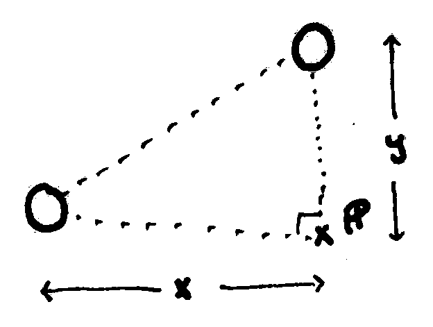
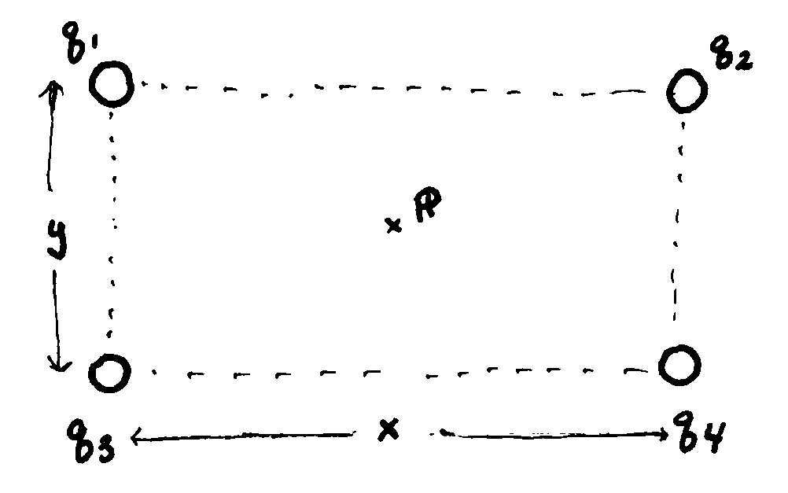
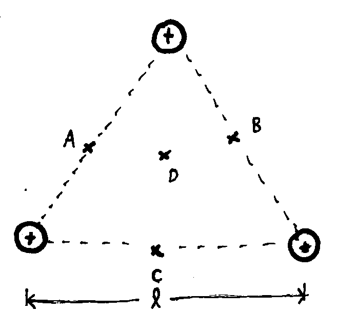
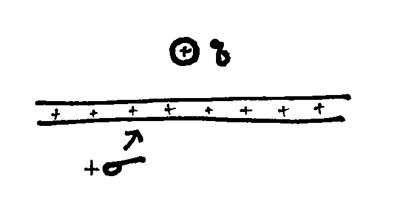
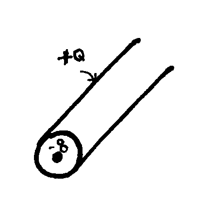
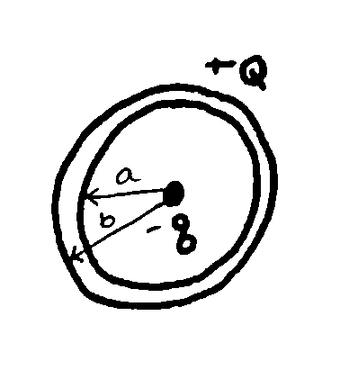

Phy222 Practice Exam1
Problem 1:
Two charges are configured as shown below. A \(5 ~ \mu C\) charge is in the bottom left and a \(+3 ~ \mu C\) in the top right separated by distances \(x=1.5 ~ m\) and \(y=1.0 ~ m\).
- Calculate the Force (vector) felt on each charge. I encourage the use of unit vectors, but you may use right angle trig if you prefer.
- Calculate the Electric Field at point \(\mathbb{P}\)
- Calculate the electric Potential at point \(\mathbb{P}\)
- Sketch the electric field and equipotential contours of the two charge system

Problem 2:
Four charges are configured in a rectangle with sides \(x=0.5 ~ m\) and \(y=0.2m\). The corners of the rectangle has charge \(q_1=+1 ~ \mu C\), \(q_2=-2 ~ \mu C\), \(q_3=+3 ~ \mu C\) and \(q_4=-4 ~ \mu C\).
- Calculate the Force felt on the top right charge.
- Calculate the Electric Field at the center of the rectangle (point P)
- Calculate the Electric Potential at the center of the rectangle (point P)
- Sketch the electric field and equipotential contours of the 4 charge system

Problem 3:
Three charges are configured in an equilateral triangle. The charges are all equal and positive.
- Calculate the electric field at points A, B, C, and D.
- Calculate the electric potential at points A, B, C and D.
- Sketch the electric potential and electric field of the 3 charge system.

Problem 4:
A uniform plane of charge is fixed in place and extends to the horizon. Above the plane, a charge \(q=100\mu C\) and mass of \(m=0.27 ~ kg\) is initially at rest, but free to move in any direction.
- Draw the normal vector to the plane of charge and define your coordinate system
- Use Gauss’ Law to derive the electric field for planar symmetry
- Integrate the electric field to find the electric potential as a function of distance above the plane.
- Find the velocity of the stationary charge q, after the charge travels \(2 ~ m\) starting from rest.

Problem 5:
An thin wire of length \(\ell=3.5 ~ m\) and charge \(q = -70 ~ /mu C\) is at the center of a cylindrical metal tube with charge \(Q=140 ~ \mu C\).
- Draw the normal vector to the outside cylinder and define your coordinate system
- Use Gauss’ Law to derive the electric field for cylindrical symmetry
- Integrate the electric field to find the electric potential as a function of distance away from the the cylinder.
- Find the charge distribution on the inside and outside of the conducting shell

Problem 6:
A small charge \(q = -50 ~ /mu C\) is at the center of a spherical metal shell with charge \(Q=+20 ~ \mu C\).
- Draw the normal vector to the outside sphere and define your coordinate system
- Use Gauss’ Law to derive the electric field for spherical symmetry
- Integrate the electric field to find the electric potential as a function of distance away from the the sphere.
- Find the charge distribution on the inside and outside of the conducting shell
